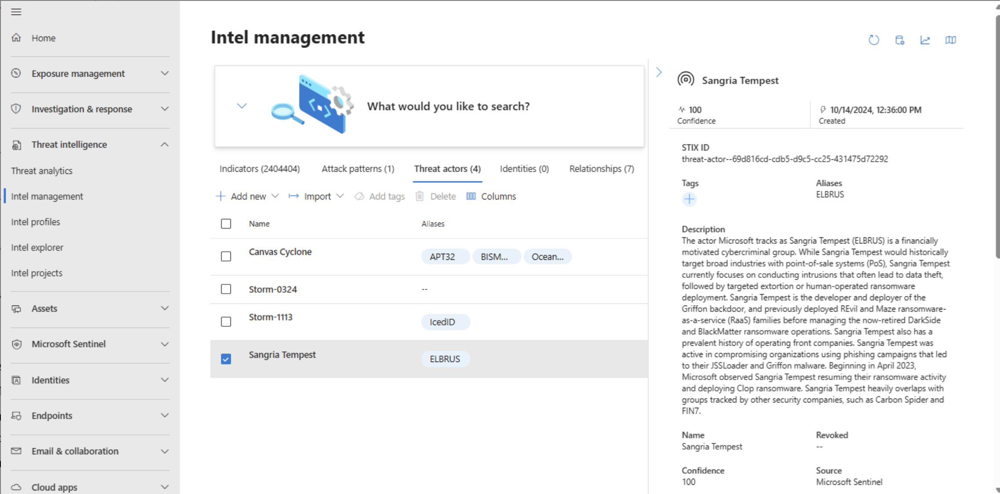
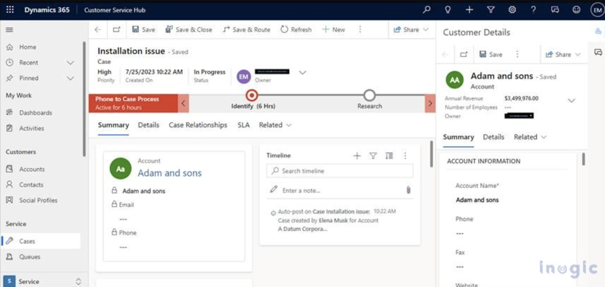
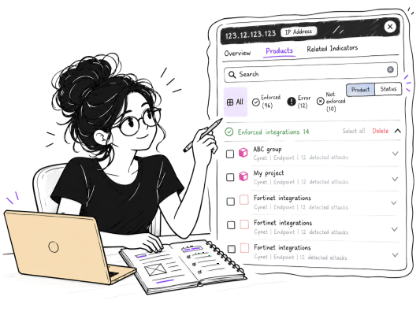
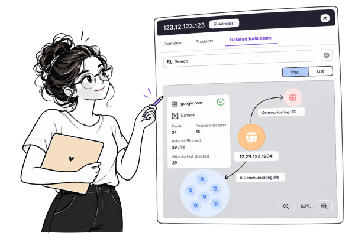
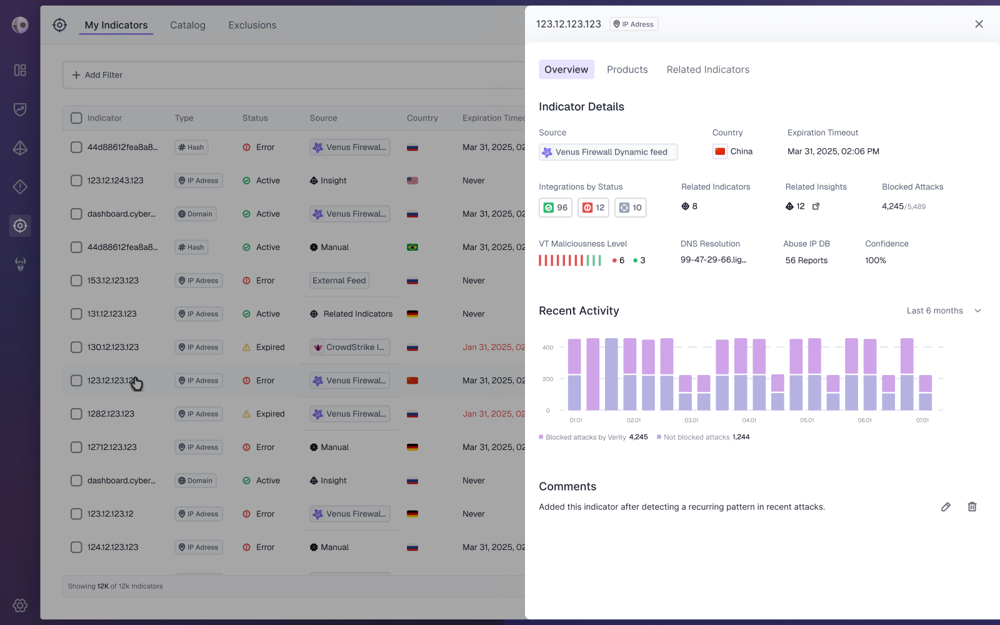
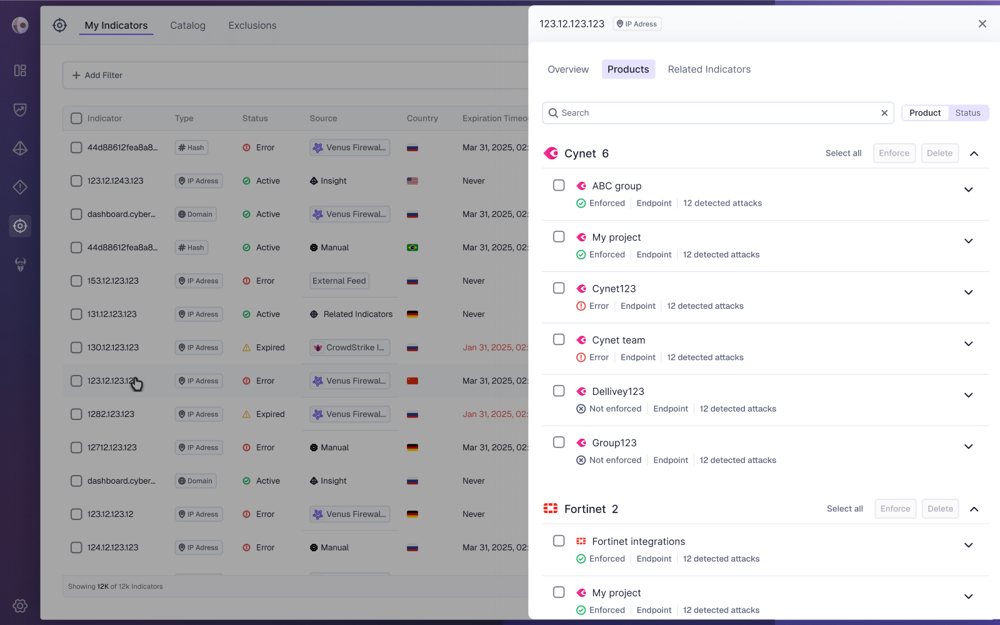
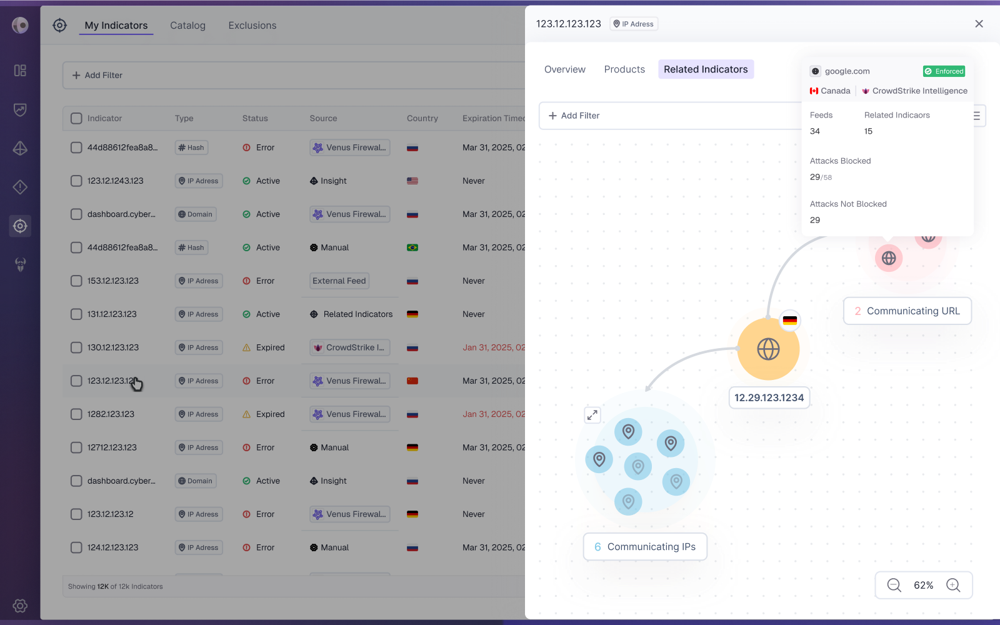

Venus
Responsabilities: UX, Research

Venus is a cybersecurity platform that identifies and prioritizes exposures and misconfigurations across cloud and on-prem environments, aligned with business priorities. The Indicators page enables risk assessment, indicator management, detailed views, manual additions, and system-generated suggestions based on existing indicators.
The Problem:
Users are exposed to a large amount of indicator related information, making it difficult to quickly identify what is most critical. This leads to high cognitive load and highlights the lack of clear hierarchy and structure tailored to their needs.
Pain Points:
Difficulty identifying critical indicator information
Time-consuming understanding of indicator context and impact
Frustration caused by information overload
Our Goals:
Reduce cognitive load by prioritizing critical indicator information, improving discoverability, and enabling users to quickly understand indicator context and impact to support faster, more confident decision making.
Eli is a senior security analyst with several years of experience in threat investigation and incident response, working as part of a global SOC team in a mid sized tech company. His daily work involves monitoring alerts, analyzing indicators, and correlating data across multiple security tools to make fast, informed decisions under pressure.
Frustrations:
Too much information presented at once, with no clear hierarchy
Difficulty locating key details within complex indicator data
Cognitive overload when switching between multiple dashboards
Lack of clarity around what data is most relevant for decisions
Needs:
A centralized view where important indicator information is easy to find
Clear structure and prioritization in data presentation
Fast access to context and trends for each indicator
Efficient navigation that supports decision-making under time pressure
I conducted a competitive analysis of platforms with indicator focused pages to examine how critical information is structured and prioritized. Combined with insights from the PM, this research helped identify the most relevant data for user decision making and compare different approaches to improving clarity and reducing cognitive load.
Research Findings
Details Pane
Presenting indicator data in a dedicated details pane helps reduce information overload in the table by centralizing all relevant data in a focused, structured view.

Navigation By Tabs
Information is divided into tabs to support intuitive navigation, improve scannability, help users easily locate the information they need by grouping content into clear topics, and reduce cognitive load.

Clear Information Hierarchy
Structuring indicator data by importance helps users quickly identify critical information while minimizing cognitive load.
Ideation & Wireframing
Based on user needs and competitive research, I created mid-to-high fidelity mockups featuring a dedicated details pane. This allows users to explore indicator data without losing their place in the main table. Information is organized into tabs to improve hierarchy, reduce cognitive load, and ensure a clear, consistent experience.
Overview
To reduce cognitive load and improve navigation, indicator information was organized into dedicated tabs based on users’ goals. The Overview tab brings together essential details, recent activity, relevance, and comments, allowing users to quickly access key information.
Products
The Products tab displays existing products and their integration status in relation to the indicator. During the design process, a key consideration was whether users should navigate by product or integration status. Through collaboration with the PM, we identified different user needs and decided to support both approaches. Users can search and explore integrations by status or by product, grouped by vendor, allowing greater flexibility and supporting different workflows.

Related Indicators
The Related Indicators tab helps users understand connections between indicators and manage them effectively. During the design process, we considered whether to present relationships through a visual graph or a structured list. In collaboration with the PM, we decided to support both approaches: a graph for exploring relationships and broader context, and a list for quickly locating and managing specific indicators. Each indicator includes key details, status, and direct access to relevant actions.

Final Design


